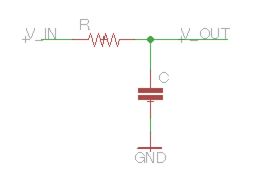
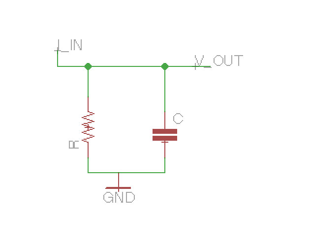
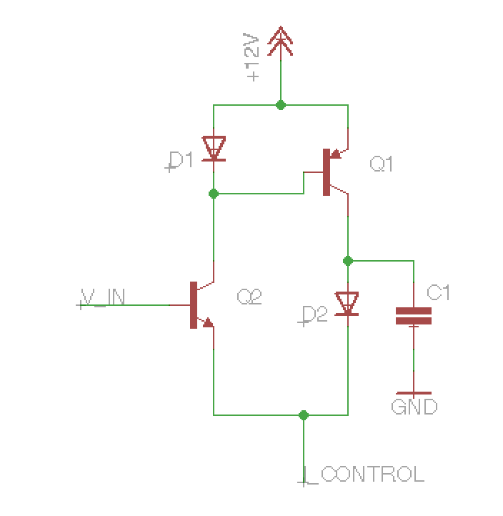

Back in the heyday of the giantanalogpolysynths (i.e.
the early to mid 80s), most synthesizers were powered by analog
integrated circuits. The small size of these chips is what enabled
synths to have so many voices in such a relatively small amount of
space. Generally, each standard synth function (VCO,
VCF,
VCA)
was implemented by a dedicated chip.
At first glance, there's nothing incredibly extraordinary about the
CEM3372 VCF
chip. It is famous for its use in the wildly flexible OberheimXpander filter
circuit, but the flexibility of that filter comes from a clever
circuit trick, not from anything specific to a single chip [1]. The CEM3372 also has an unusual number of
"convenience features" - an integrated VCA for the output and two VCAs
for voltage-controlled mixing on the input. Perhaps because of these
extra features it was marketed as a "signal processor" chip instead of
just a "filter".
However, a deeper look reveals that the filtering works through a
slightly different technology than the previous generation of VCF chips
(e.g. CEM3320,
SSM2040, IR3109), and I thought it might be worth writing up how it
works as the technology has applications for discrete circuits as
well.
Low Pass Filters
Low pass filters are designed to remove high frequency components
from a signal. Any components higher in frequency than a certain
"cut-off" frequency will be removed. Musically, filters are one of the
most basic electronic "timbre modifiers" and are included in almost all
synthesizers. In fact, the "sound" of the synthesizer is often defined
by the character of its filter. Whole genres have
sprung up exploiting the effect created from changing the cut-off
frequency over time.
WARNING! The rest of this post will probably require some (hopefully
basic) familiarity with circuits.
Perhaps the most basic lowpass filter consists of the following:

This is a classic voltage divider,
with one of the resistors replaced with a capacitor. In fact, we can use
the concept of impedence
to treat the capacitor as a sort of frequency-dependent resistor[2]. For voltages that don't change, the capacitor
acts as an open circuit; for high frequencies, it acts as a short; and
for medium frequencies, somewhere in between. Just like a classic
resistive voltage divider, when we put the capacitor in a divider the
output voltage is:
$$V_{out} = V_{in}\frac{Z_{C}}{{Z_{C}}+{Z_{R}}}$$
which reduces to
$$V_{out} = V_{in}\frac{1}{1 + \frac{Z_R}{Z_C}}$$
If the voltage is constant, \(Z_C\) will become infinite so \(V_{out}
= V_{in}\). If the voltage is high frequency, \(Z_C\) will be zero so
\(V_{out} = 0\). The exact "cut-off" point turns out to be
\(\frac{1}{2\pi RC}\) - but to understand why you'll need some math outside the
scope of this blog post.
While this voltage-in, voltage-out divider is the most common scheme
for low pass filtering, there are of course many others. The way the
CEM3372 works is by sending the signal through an input current
rather than voltage, and then putting the resistor and capacitor in
parallel:

To analyze this arrangement, we use the familiar
formula for parallel impedence:
So, since \(Z_R\) does not vary with frequency, this is the exact
same sort of lowpass filter as the first one we considered. In
synthesizer filters, unlike most analog circuits, you need to be able to
change the cut-off point of the filter based on electrical signals. To
do this, we need some way to electronically control either the
resistance or the capacitance.
The CEM3372 Circuit
As described in this patent, in the
CEM3372, we simulate a current-controlled resistor by sending a large,
steady current through a diode, and then sending a very small current as
the signal. At a small enough signal current, the diode behaves as a
voltage source followed by a resistor whose value is set by the large,
steady current going through it. This is often called the diode's dynamic
resistance.. This is approximately \(\frac{26mV}{I_{steady}}\).
Since synthesizers generally send audio signals as voltages, the
CEM3372 circuit also includes voltage-to-current converters for both the
audio and control input. Here's the circuit with control signal's
voltage-to-current converter not shown.

The control signal is sent as a current \(I_{control}\), and the
audio input is \(V_{in}\). D1 and Q1 comprise a common circuit idiom
called a current
mirror, which mirrors the current through D1 out the collector of
Q1. In this case, with \(V_{in}\) steady, both D1 and Q1 will have
\(\frac{I_{control}}{2}\) going through them.
Now, let's assume \(V_{in}\) is quite small. Then increasing
\(V_{in}\) will create a small increase of the current through Q1's
collector. Let's call this small-scale current \(i_{in}\). Then this is
mirrored by D1 and Q1, such that the same current as Q2's collector,
i.e. \(\frac{I_{control}}{2}+i_{in}\) appears at Q1's collector. Since
\(\frac{I_{control}}{2}\) is steady, none of it flows through C1, and it
all goes through D2. Since the steady current is so much larger than
\(i_{in}\), we can treat D2 as a dynamic resistor with resistance set by
the steady current. So, in practice, we now have a very similar
situation to the parallel low pass filter considered above, with the
input current being the small-scale \(i_{in}\).
more advanced analysis
The rest of the post will be a slightly more detailed analysis of
this situation. The main result here is the transfer function is
more-or-less the same as the RC filter case, except the amplitude of the
output does not depend on the resistance.
The main difference in the CEM3372 situation from the currentbased-
RC filter above is that in the RC filter, both the resistance and the
capacitor are tied to ground. That's not true here, as D2 goes accross
\(V_{out}\) to \(V_{in} - V_{Q2be}\), where \(V_{Q2be}\) is the
base-emitter voltage of Q1. This acts as afeedback loop and eliminates
the awkward effect of increasing the output amplitude when the
resistance increases.
Let's recall first that for small signals, the diode acts as a
resistor in series with a voltage source - call the voltage \(V_{D}\),
and the resistance \(Z_{D}\). Since Q2 and D2 are matched, and the
large-scale currents are the same, they have the same resistance [3] and voltage. So, the voltage accross D2 is given
by \(V_{D} + i_{D2} Z_{D}\), and \(V_{Q2be} = V_{D} + i_{in} Z_{D}\)
as we were trying to show. Using the formula for an RC filter's
frequency cut-off from above, we have
$$f_{c} = \frac{I_{control}}{4 C \pi \cdot 26mV}$$
which, as we hoped, is directly controllable from the control
current.
advantages
Using a diode's dynamic resistance inside the differential pair
arrangement provides many advantages over the standard OTA
based low-pass filter. The main one is that in the CEM3372, unlike
competitor chips, the stages themselves don't need to have feedback.
This means far fewer external components and less trimming required. The
signal is passed in as a voltage and comes out as a voltage, so the
stages can be cascaded without ever converting from current to voltage
[4].
The downside to all this is that you lose the ability to make a
voltage-controlled integrator, which is a necessary part of the popular
state
variable filter used in the Oberheim SEM,
Jupiter 6, and many other synthesizers.
footnotes
1
Like many synthesizer-related tricks, its origin can be traced back to
Bernie Hutchin's ElectroNotes newsletter.
2
Of course, experienced circuiteers will recognize that in addition to
having an effect on the amplitude, capacitors also have an effect on the
phase.s
3
Of course, for Q2, this is actually the so-called transimpedence,
the base-emitter voltage change per amp of collector-emitter current.
Base currents aren't considered in this quick-and-dirty analysis.
4
As mentioned in the patent, base currents will create errors that will
have to be compensated when the stages are connected directly.